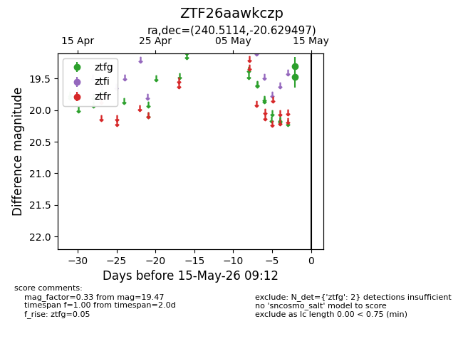
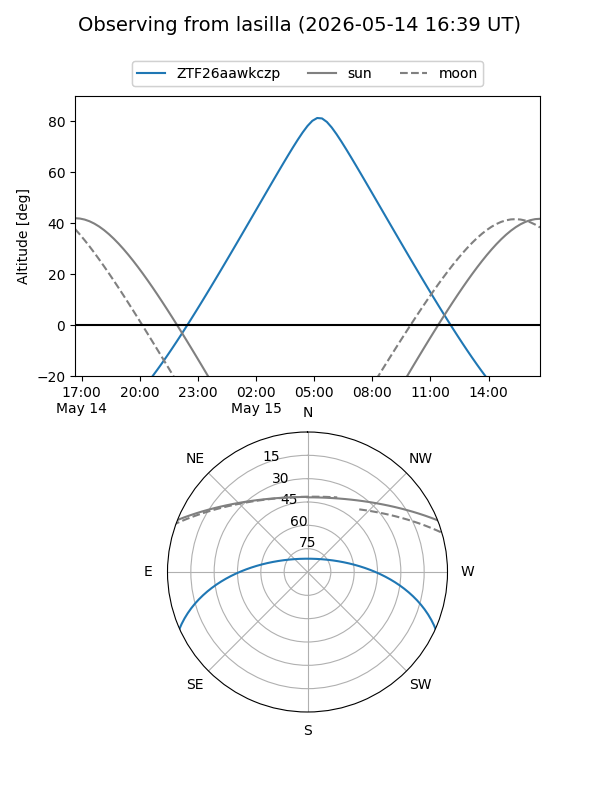
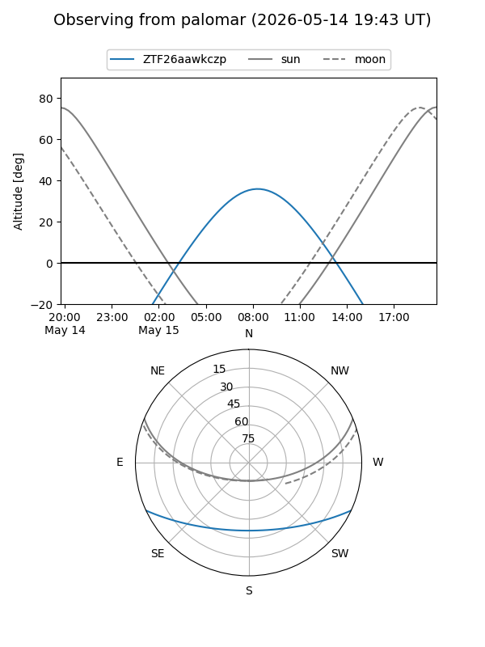

ZTF26aawkczp
Target ZTF26aawkczp at 2026-05-15 09:14
Aliases and brokers:
FINK: link
Lasair: link
ALeRCE: link
alt names
ZTF26aawkczp (ztf,fink_ztf)
Coordinates:
equatorial (ra, dec) = 240.5114,-20.62950
equatorial (HMS+DMS) = 16:02:02.74,-20:37:46.19
galactic (l, b) = (351.9429,+23.60497)
Flags:
Photometry:
last ztfg=19.47
2 ztfg detections
Lightcurve

Visibility


Additional plots